All projects, 20 projects
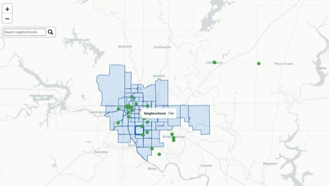
GIS01Tulsa Event Monitor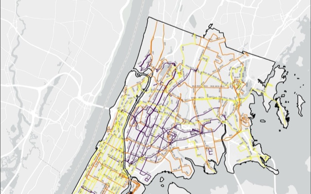
GIS02MTA bus electrification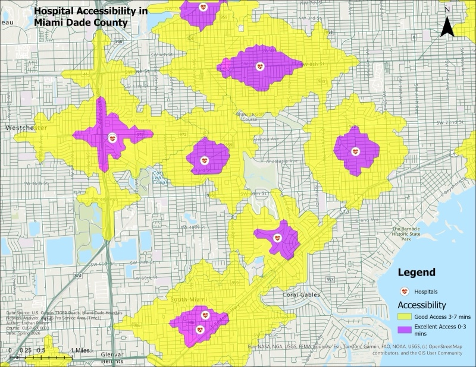
GIS03Hospital accessibility, Miami-Dade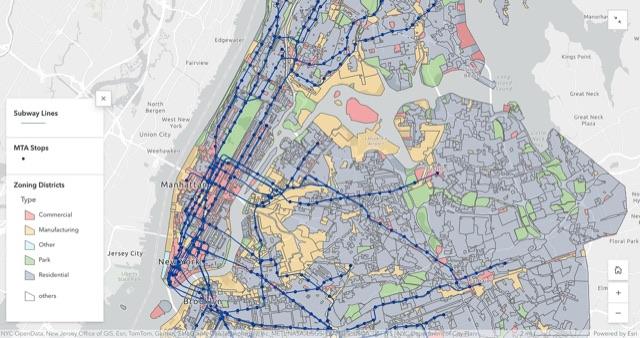
GIS04The economics of proximity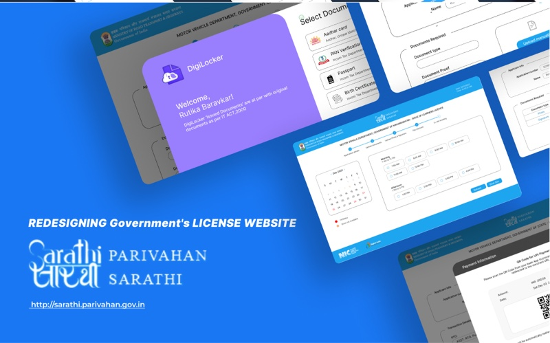
UI/UX05Sarathi licence portal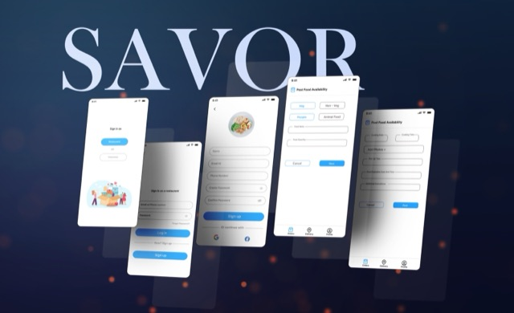
UI/UX06SAVOR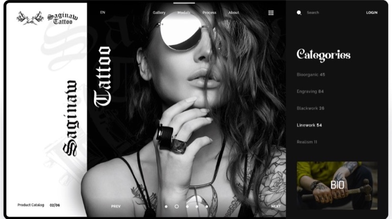
UI/UX09Saginaw Tattoo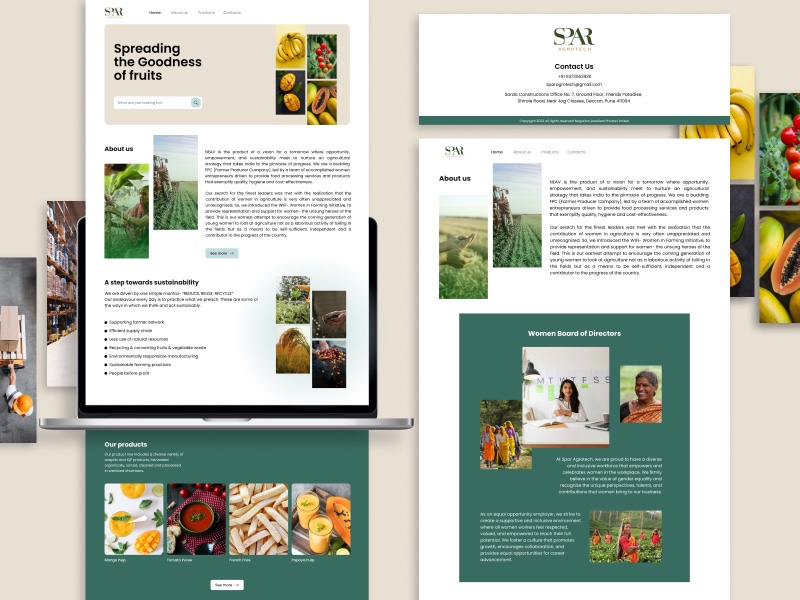
UI/UX10Spar Agrotech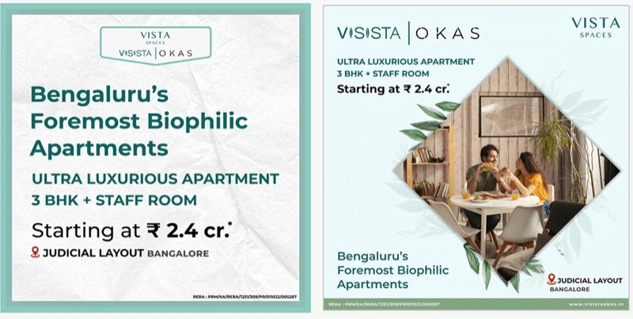
Brand11Address Masters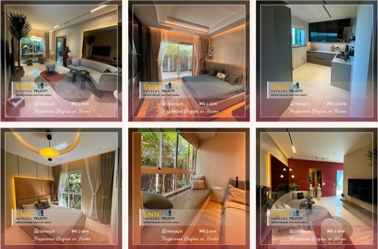
Brand12SNN Estates Felicity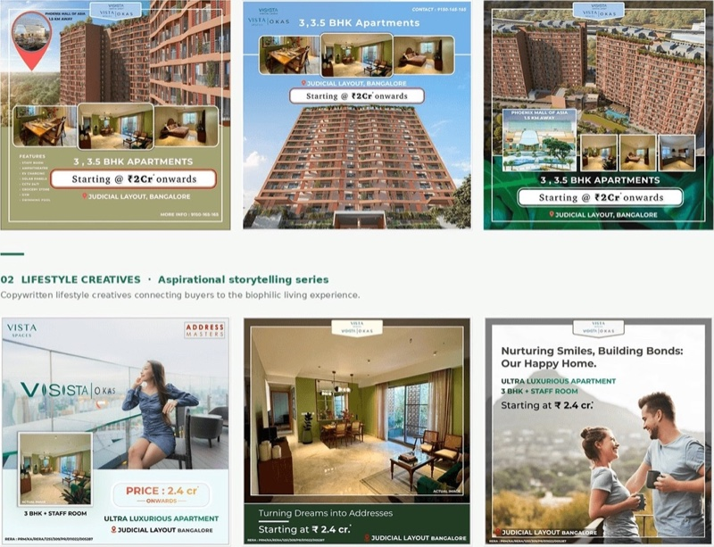
Brand13Visista OKAS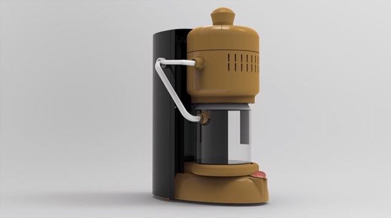
Product14Filter coffee maker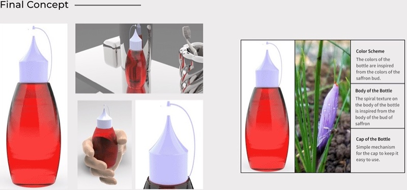
Product15Saffron oil bottle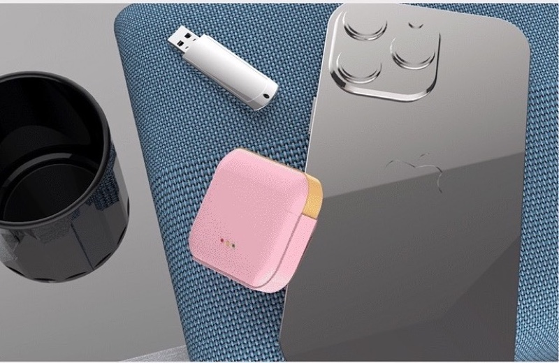
Product16Earpods packaging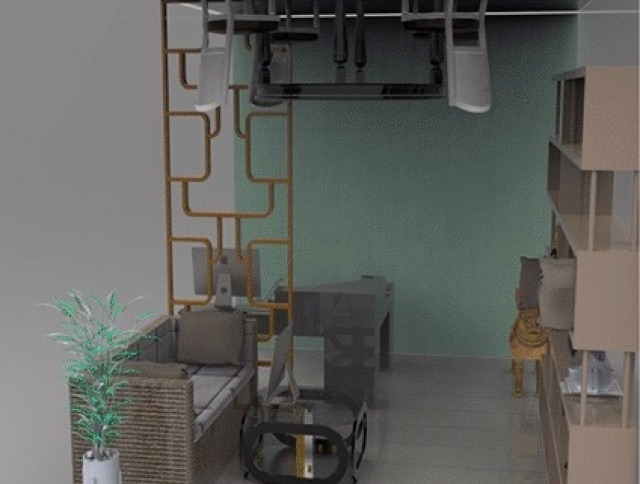
Product18Home decor store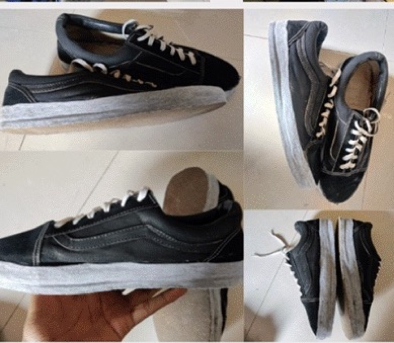
Product19Sustainable shoes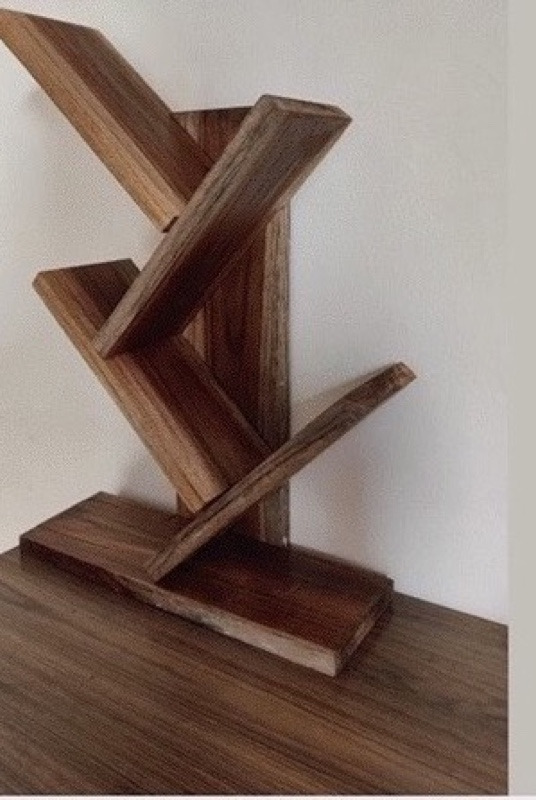
Product20Tree bookshelfGIS work, 4 projects
Maps and analysis from the master's, and a civic mapping tool built for a city office.
 GIS01
GIS01Tulsa Event Monitor
A mapping tool for the City Auditor's Office that pulls community events from three platforms onto 493 geocoded venues.
 GIS02
GIS02MTA bus electrification
A five-stage GIS workflow using a 1 ft elevation model, nine depots and GTFS data to find the routes where terrain cuts electric bus range, then siting five shared charging stations.
 GIS03
GIS03Hospital accessibility, Miami-Dade
Network analysis with two travel-speed models checked against Google Maps. About 890,786 residents live within 3 to 7 minutes of a hospital; 1,809,369 live beyond 7.
The economics of proximity
Why do New Yorkers value time over money? The HUD Location Affordability Index mapped at census-tract level across the five boroughs, with subway lines over zoning districts.
UI/UX design, 6 projects
Interfaces for government services, mobile apps and websites. Each case study states the problem, what I decided, and what happened.
 UI/UX05
UI/UX05Sarathi licence portal
The learner's licence application, cut from seven scattered steps to one guided flow with DigiLocker uploads, UPI payment and a progress bar.
 UI/UX06
UI/UX06SAVOR
Restaurants post what is left over, volunteers deliver it to donation spots, and streaks keep both sides coming back. Built from interviews with a restaurant, a canteen, a meat shop and a dairy.
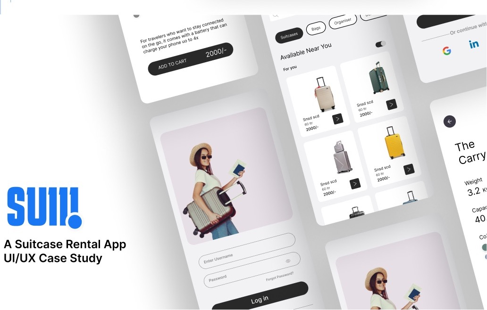
UI/UX07SUII suitcase rental
Rent expensive, rarely used travel gear instead of buying it. Interviews, one persona, wireframes and final screens for browsing, booking dates and tracking a delivery.
 UI/UX08
UI/UX08Mighty
A new information architecture and visual system for an investment guidance platform, from the landing page to risk-profile onboarding.
 UI/UX09
UI/UX09Saginaw Tattoo
A dark, editorial site for a tattoo studio: gallery, artists, style categories and booking, built around large black-and-white photography.
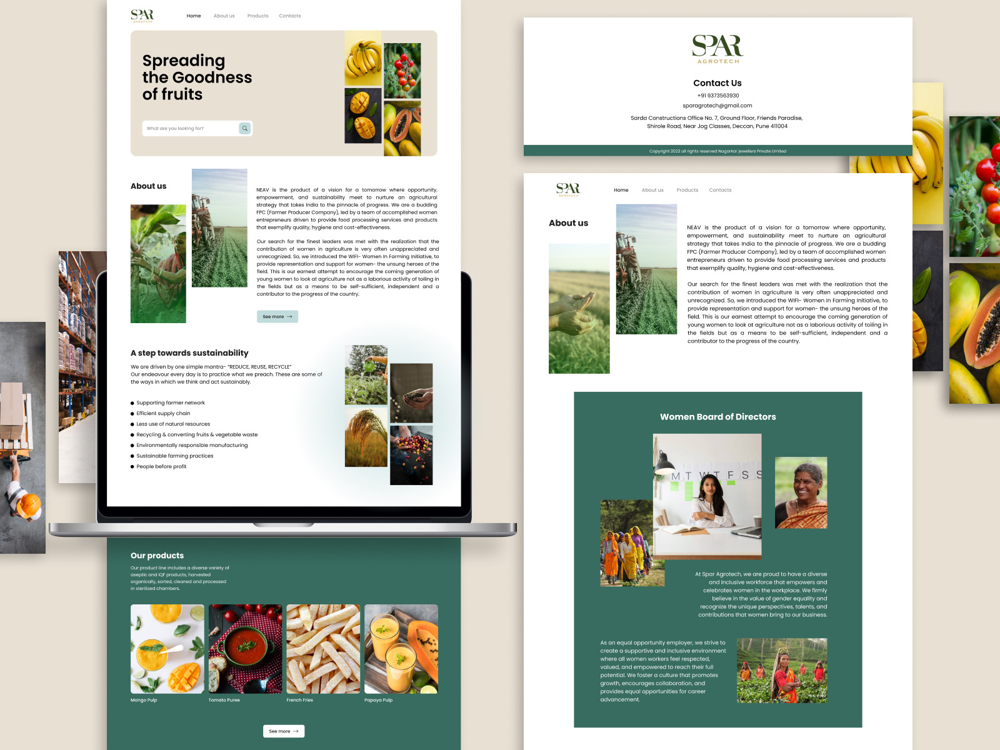
UI/UX10Spar Agrotech
A website and identity for a women-led farmer producer company in Pune, from the product range to the board of directors.
Brand and campaign, 3 projects
Campaign systems and films for two Bengaluru residential developments, and the startup where I designed them.
 Brand11
Brand11Address Masters
Six months as the designer at an early-stage real estate startup: an AI analytics dashboard, a component library, and the campaigns for two developments, including two films shot and edited. 200+ creatives, 1,000+ buyer inquiries.
 Brand12
Brand12SNN Estates Felicity
Interior photography, property ads and an amenity storytelling series for a development behind Manyata Tech Park.
 Brand13
Brand13Visista OKAS
Property ads, lifestyle creatives and a biophilic positioning series for a luxury development in Judicial Layout.
Product design, 7 projects
Products from the B.Des, each taken from research and sketches to renders or a working model. Each page ends with a link to the full process board on Behance.
 Product14
Product14Filter coffee maker
A modern brewer that keeps the ritual of South Indian filter coffee, tested as a foam model.
 Product15
Product15Saffron oil bottle
Form and color taken from the saffron bud, with a cap that cannot get lost.
 Product16
Product16Earpods packaging
A sliding case that opens without tearing, in four gradient variants.
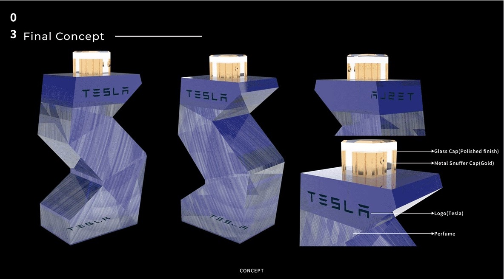
Product17Tesla perfume bottle
A faceted glass bottle with a polished cap, for a brand that does not sell perfume yet.
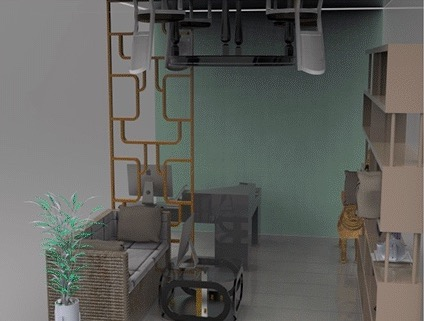
Product18Home decor store
A 6 by 9 metre store laid out so the whole range is visible from the sofa.
 Product19
Product19Sustainable shoes
Cork soles, post-consumer cotton uppers and organic cotton laces, prototyped by hand.
 Product20
Product20Tree bookshelf
A dado-jointed shelf sized from anthropometric data and built in wood.
Trained as a designer, working as a data scientist, still both.
I studied product design at MIT World Peace University in Pune and spent 2024 as the designer at Address Masters, an early-stage startup in Bangalore, working across the product and its marketing.
In 2025 I moved to Brooklyn for the M.S. in Urban Data Science at NYU Tandon. Through NYU's Center for Urban Science and Progress I spent a semester with the City of Tulsa Auditor's Office, where my teammate and I built a mapping tool the office now owns.
The through line is data that people have to act on. Designers usually hand that problem to someone else. I would rather understand the data well enough to design the right thing, and increasingly, to build it.
- Product and UX
- Figma, prototyping, usability testing, design systems, UX research, information architecture
- Industrial design
- Rhino, Fusion 360, SolidWorks, Keyshot, Blender, hand sketching, model making
- Data and GIS
- ArcGIS Pro, Network Analyst, location allocation, hot spot analysis, cartography, Python with pandas and scikit-learn, SQL, R
- Building
- Streamlit, REST APIs (Google Places, Eventbrite), HTML and CSS. Currently learning LLM tool use and MCP.
Let's make city data usable.
Based in Brooklyn. Open to full-time roles from June 2027, internships in summer 2027, and part-time work now.
lm5677@nyu.edu